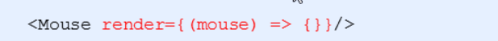

<!DOCTYPE html>


<html lang="en">
  

    <head>
      <meta charset="utf-8" />
        
      <meta
        name="viewport"
        content="width=device-width, initial-scale=1, maximum-scale=1"
      />
      <title>Day3 生命周期&amp;render props模式&amp;高阶组件&amp;原理揭秘 |  Hexo</title>
  <meta name="generator" content="hexo-theme-ayer">
       
<link rel="stylesheet" href="/dist/main.css">

      <link
        rel="stylesheet"
        href="https://cdn.jsdelivr.net/gh/Shen-Yu/cdn/css/remixicon.min.css"
      />
      
<link rel="stylesheet" href="/css/custom.css">
 
      <script src="https://cdn.jsdelivr.net/npm/pace-js@1.0.2/pace.min.js"></script>
       
 

      <link
        rel="stylesheet"
        href="https://cdn.jsdelivr.net/npm/@sweetalert2/theme-bulma@5.0.1/bulma.min.css"
      />
      <script src="https://cdn.jsdelivr.net/npm/sweetalert2@11.0.19/dist/sweetalert2.min.js"></script>

      <!-- mermaid -->
      
      <style>
        .swal2-styled.swal2-confirm {
          font-size: 1.6rem;
        }
      </style>
    </head>
  </html>
</html>


<body>
  <div id="app">
    
      
      <canvas width="1777" height="841"
        style="position: fixed; left: 0px; top: 0px; z-index: 99999; pointer-events: none;"></canvas>
      
    <main class="content on">
      <section class="outer">
  <article
  id="post-react基础Day03-生命周期"
  class="article article-type-post"
  itemscope
  itemprop="blogPost"
  data-scroll-reveal
>
  <div class="article-inner">
    
    <header class="article-header">
       
<h1 class="article-title sea-center" style="border-left:0" itemprop="name">
  Day3 生命周期&amp;render props模式&amp;高阶组件&amp;原理揭秘
</h1>
 

      
    </header>
     
    <div class="article-meta">
      <a href="/2022/01/17/react%E5%9F%BA%E7%A1%80Day03-%E7%94%9F%E5%91%BD%E5%91%A8%E6%9C%9F/" class="article-date">
  <time datetime="2022-01-17T13:25:31.000Z" itemprop="datePublished">2022-01-17</time>
</a>   
<div class="word_count">
    <span class="post-time">
        <span class="post-meta-item-icon">
            <i class="ri-quill-pen-line"></i>
            <span class="post-meta-item-text"> Word count:</span>
            <span class="post-count">2.1k</span>
        </span>
    </span>

    <span class="post-time">
        &nbsp; | &nbsp;
        <span class="post-meta-item-icon">
            <i class="ri-book-open-line"></i>
            <span class="post-meta-item-text"> Reading time≈</span>
            <span class="post-count">7 min</span>
        </span>
    </span>
</div>
 
    </div>
      
    <div class="tocbot"></div>


  
    <div class="article-entry" itemprop="articleBody">
       
  <h1 id="组件生命周期（★★★）"><a href="#组件生命周期（★★★）" class="headerlink" title="组件生命周期（★★★）"></a>组件生命周期（★★★）</h1><h2 id="目标"><a href="#目标" class="headerlink" title="目标"></a>目标</h2><ul>
<li>说出组件生命周期对应的钩子函数</li>
<li>钩子函数调用的时机</li>
</ul>
<h2 id="概述"><a href="#概述" class="headerlink" title="概述"></a>概述</h2><p>意义：组件的生命周期有助于理解组件的运行方式，完成更复杂的组件功能、分析组件错误原因等</p>
<p>组件的生命周期： 组件从被创建到挂载到页面中运行，再到组件不在时卸载的过程</p>
<p>生命周期的每个阶段总是伴随着一些方法调用，这些方法就是生命周期的钩子函数</p>
<p>构造函数的作用：为开发人员在不同阶段操作组件提供了实际</p>
<h2 id="生命周期阶段"><a href="#生命周期阶段" class="headerlink" title="生命周期阶段"></a>生命周期阶段</h2><p></p>
<h3 id="创建时（挂载阶段）"><a href="#创建时（挂载阶段）" class="headerlink" title="创建时（挂载阶段）"></a>创建时（挂载阶段）</h3><ul>
<li>执行时机：组件创建时（页面加载时）</li>
<li>执行顺序</li>
</ul>
<p></p>
<p></p>
<h3 id="更新时"><a href="#更新时" class="headerlink" title="更新时"></a>更新时</h3><p>执行时机：<code>setState()、 forceUpdate()、 组件接收到新的props</code></p>
<p>说明：以上三者任意一种变化，组件就会重新渲染</p>
<p>执行顺序：</p>
<p></p>
<p></p>
<h3 id="卸载时"><a href="#卸载时" class="headerlink" title="卸载时"></a>卸载时</h3><p>执行时机：组件从页面中消失</p>
<p>作用：用来做清理操作</p>
<p></p>
<h3 id="不常用的钩子函数"><a href="#不常用的钩子函数" class="headerlink" title="不常用的钩子函数"></a>不常用的钩子函数</h3><h4 id="旧版的生命周期钩子函数"><a href="#旧版的生命周期钩子函数" class="headerlink" title="旧版的生命周期钩子函数"></a>旧版的生命周期钩子函数</h4><p></p>
<h4 id="新版完整生命会走棋钩子函数"><a href="#新版完整生命会走棋钩子函数" class="headerlink" title="新版完整生命会走棋钩子函数"></a>新版完整生命会走棋钩子函数</h4><p></p>
<h5 id="getDerivedStateFromProps"><a href="#getDerivedStateFromProps" class="headerlink" title="getDerivedStateFromProps()"></a><code>getDerivedStateFromProps()</code></h5><ul>
<li><strong><code>getDerivedStateFromProps</code></strong> 会在调用 render 方法之前调用，并且在初始挂载及后续更新时都会被调用。它应返回一个对象来更新 state，如果返回 null 则不更新任何内容</li>
<li>不管原因是什么，都会在<em>每次</em>渲染前触发此方法</li>
</ul>
<h5 id="shouldComponentUpdate"><a href="#shouldComponentUpdate" class="headerlink" title="shouldComponentUpdate()"></a><code>shouldComponentUpdate()</code></h5><ul>
<li>根据 <strong><code>shouldComponentUpdate()</code></strong> 的返回值，判断 React 组件的输出是否受当前 state 或 props 更改的影响。默认行为是 state 每次发生变化组件都会重新渲染</li>
<li>当 props 或 state 发生变化时，**<code>shouldComponentUpdate()</code>** 会在渲染执行之前被调用。返回值默认为 true</li>
</ul>
<h5 id="getSnapshotBeforeUpdate"><a href="#getSnapshotBeforeUpdate" class="headerlink" title="getSnapshotBeforeUpdate()"></a><code>getSnapshotBeforeUpdate()</code></h5><ul>
<li><strong><code>getSnapshotBeforeUpdate()</code></strong> 在最近一次渲染输出（提交到 DOM 节点）之前调用。它使得组件能在发生更改之前从 DOM 中捕获一些信息（例如，滚动位置）。此生命周期的任何返回值将作为参数传递给 <strong><code>componentDidUpdate()</code></strong></li>
<li>此用法并不常见，但它可能出现在 UI 处理中，如需要以特殊方式处理滚动位置的聊天线程等</li>
</ul>
<h1 id="render-props模式-（★★★）"><a href="#render-props模式-（★★★）" class="headerlink" title="render-props模式 （★★★）"></a>render-props模式 （★★★）</h1><h2 id="目标-1"><a href="#目标-1" class="headerlink" title="目标"></a>目标</h2><ul>
<li>知道render-props模式有什么作用</li>
<li>能够说出render-props的使用步骤</li>
</ul>
<h2 id="React组件复用概述"><a href="#React组件复用概述" class="headerlink" title="React组件复用概述"></a>React组件复用概述</h2><ul>
<li>思考：如果两个组件中的部分功能相似或相同，该如何处理？</li>
<li>处理方式：复用相似的功能</li>
<li>复用什么？<ul>
<li>state</li>
<li>操作state的方法</li>
</ul>
</li>
<li>两种方式：<ul>
<li>render props模式</li>
<li>高阶组件（HOC）</li>
</ul>
</li>
<li>注意： 这两种方式不是新的API，而是利用React自身特点的编码技巧，演化而成的固定模式</li>
</ul>
<h2 id="思路分析"><a href="#思路分析" class="headerlink" title="思路分析"></a>思路分析</h2><ul>
<li><p>思路：将要复用的state和操作state的方法封装到一个组件中</p>
</li>
<li><p>如何拿到该组件中复用的state</p>
<ul>
<li><p>在使用组件时，添加一个值为函数的prop，通过函数参数来获取</p>
<p></p>
</li>
</ul>
</li>
<li><p>如何渲染到任意的UI</p>
<ul>
<li><p>使用该函数的返回值作为要渲染的UI内容</p>
<p></p>
</li>
</ul>
</li>
</ul>
<h2 id="使用步骤"><a href="#使用步骤" class="headerlink" title="使用步骤"></a>使用步骤</h2><ul>
<li>创建Mouse组件，在组件中提供复用的逻辑代码</li>
<li>将要复用的状态作为 props.render(state)方法的参数，暴露到组件外部</li>
<li>使用props.render() 的返回值作为要渲染的内容</li>
</ul>
<p></p>
<h4 id="示例demo"><a href="#示例demo" class="headerlink" title="示例demo"></a>示例demo</h4><figure class="highlight plaintext"><table><tr><td class="gutter"><pre><span class="line">1</span><br><span class="line">2</span><br><span class="line">3</span><br><span class="line">4</span><br><span class="line">5</span><br><span class="line">6</span><br><span class="line">7</span><br><span class="line">8</span><br><span class="line">9</span><br><span class="line">10</span><br><span class="line">11</span><br><span class="line">12</span><br><span class="line">13</span><br><span class="line">14</span><br><span class="line">15</span><br><span class="line">16</span><br><span class="line">17</span><br><span class="line">18</span><br><span class="line">19</span><br><span class="line">20</span><br><span class="line">21</span><br><span class="line">22</span><br><span class="line">23</span><br><span class="line">24</span><br><span class="line">25</span><br><span class="line">26</span><br><span class="line">27</span><br><span class="line">28</span><br><span class="line">29</span><br><span class="line">30</span><br><span class="line">31</span><br><span class="line">32</span><br><span class="line">33</span><br><span class="line">34</span><br><span class="line">35</span><br></pre></td><td class="code"><pre><span class="line">class Mouse extends React.Component &#123;</span><br><span class="line">    // 鼠标位置状态</span><br><span class="line">    state = &#123;</span><br><span class="line">        x: 0,</span><br><span class="line">        y: 0</span><br><span class="line">    &#125;</span><br><span class="line"></span><br><span class="line">    // 监听鼠标移动事件</span><br><span class="line">    componentDidMount()&#123;</span><br><span class="line">        window.addEventListener(&#x27;mousemove&#x27;,this.handleMouseMove)</span><br><span class="line">    &#125;</span><br><span class="line">    handleMouseMove = e =&gt; &#123;</span><br><span class="line">        this.setState(&#123;</span><br><span class="line">            x: e.clientX,</span><br><span class="line">            y: e.clientY</span><br><span class="line">        &#125;)</span><br><span class="line">    &#125;</span><br><span class="line">    render()&#123;</span><br><span class="line">        // 向外界提供当前子组件里面的数据</span><br><span class="line">        return this.props.render(this.state)</span><br><span class="line">    &#125;</span><br><span class="line">&#125;</span><br><span class="line">class App extends React.Component &#123;</span><br><span class="line">    render() &#123;</span><br><span class="line">        return (</span><br><span class="line">            &lt;div&gt;</span><br><span class="line">                App</span><br><span class="line">                &lt;Mouse render=&#123;mouse =&gt; &#123;</span><br><span class="line">                    return &lt;p&gt;X&#123;mouse.x&#125;Y&#123;mouse.y&#125;&lt;/p&gt;</span><br><span class="line">                &#125;&#125;/&gt;</span><br><span class="line">            &lt;/div&gt;</span><br><span class="line">        )</span><br><span class="line">    &#125;</span><br><span class="line">&#125;</span><br><span class="line">ReactDOM.render(&lt;App /&gt;,document.getElementById(&#x27;root&#x27;))</span><br></pre></td></tr></table></figure>

<h2 id="children代替render属性"><a href="#children代替render属性" class="headerlink" title="children代替render属性"></a>children代替render属性</h2><ul>
<li>注意：并不是该模式叫 render props就必须使用名为render的prop，实际上可以使用任意名称的prop</li>
<li>把prop是一个函数并且告诉组件要渲染什么内容的技术叫做： render props模式</li>
<li>推荐：使用childre代替render属性</li>
</ul>
<p></p>
<h2 id="优化代码"><a href="#优化代码" class="headerlink" title="优化代码"></a>优化代码</h2><ul>
<li>推荐给render props模式添加props校验</li>
</ul>
<p></p>
<ul>
<li></li>
</ul>
<p></p>
<h1 id="高阶组件-（★★★）"><a href="#高阶组件-（★★★）" class="headerlink" title="高阶组件 （★★★）"></a>高阶组件 （★★★）</h1><h2 id="目标-2"><a href="#目标-2" class="headerlink" title="目标"></a>目标</h2><ul>
<li>知道高阶组件的作用</li>
<li>能够说出高阶的使用步骤</li>
</ul>
<h2 id="概述-1"><a href="#概述-1" class="headerlink" title="概述"></a>概述</h2><ul>
<li>目的：实现状态逻辑复用</li>
<li>采用 包装模式</li>
<li>手机：获取保护功能</li>
<li>手机壳：提供保护功能</li>
<li>高阶组件就相当于手机壳，通过包装组件，增强组件功能</li>
</ul>
<p></p>
<h2 id="思路分析-1"><a href="#思路分析-1" class="headerlink" title="思路分析"></a>思路分析</h2><ul>
<li>高阶组件(HOC、Higher-Order Component) 是一个函数，接收要包装的组件，返回增强后的组件</li>
</ul>
<p></p>
<ul>
<li>高阶组件内部创建了一个类组件，在这个类组件中提供复用的状态逻辑代码，通过prop将复用的状态传递给被包装组件<code>WrappedComponent</code></li>
</ul>
<p></p>
<h2 id="使用步骤-1"><a href="#使用步骤-1" class="headerlink" title="使用步骤"></a>使用步骤</h2><ul>
<li>创建一个函数，名称约定以with开头</li>
<li>指定函数参数，参数应该以大写字母开头</li>
<li>在函数内部创建一个类组件，提供复用的状态逻辑代码，并返回</li>
<li>在该组件中，渲染参数组件，同时将状态通过prop传递给参数组件</li>
<li>调用该高阶组件，传入要增强的组件，通过返回值拿到增强后的组件，并将其渲染到页面</li>
</ul>
<p><strong>包装函数</strong></p>
<figure class="highlight plaintext"><table><tr><td class="gutter"><pre><span class="line">1</span><br><span class="line">2</span><br><span class="line">3</span><br><span class="line">4</span><br><span class="line">5</span><br><span class="line">6</span><br><span class="line">7</span><br><span class="line">8</span><br><span class="line">9</span><br><span class="line">10</span><br><span class="line">11</span><br><span class="line">12</span><br><span class="line">13</span><br><span class="line">14</span><br><span class="line">15</span><br><span class="line">16</span><br><span class="line">17</span><br><span class="line">18</span><br><span class="line">19</span><br><span class="line">20</span><br><span class="line">21</span><br><span class="line">22</span><br><span class="line">23</span><br><span class="line">24</span><br><span class="line">25</span><br><span class="line">26</span><br><span class="line">27</span><br><span class="line">28</span><br><span class="line">29</span><br><span class="line">30</span><br></pre></td><td class="code"><pre><span class="line">// 定义一个函数，在函数内部创建一个相应类组件</span><br><span class="line">function withMouse(WrappedComponent) &#123;</span><br><span class="line">    // 该组件提供复用状态逻辑</span><br><span class="line">    class Mouse extends React.Component &#123;</span><br><span class="line">        state = &#123;</span><br><span class="line">            x: 0,</span><br><span class="line">            y: 0</span><br><span class="line">        &#125;</span><br><span class="line">        // 事件的处理函数</span><br><span class="line">        handleMouseMove = (e) =&gt; &#123;</span><br><span class="line">            this.setState(&#123;</span><br><span class="line">                x: e.clientX,</span><br><span class="line">                y: e.clientY</span><br><span class="line">            &#125;)</span><br><span class="line">        &#125;</span><br><span class="line">        // 当组件挂载的时候进行事件绑定</span><br><span class="line">        componentDidMount() &#123;</span><br><span class="line">            window.addEventListener(&#x27;mousemove&#x27;, this.handleMouseMove)</span><br><span class="line">        &#125;</span><br><span class="line">        // 当组件移除时候解绑事件</span><br><span class="line">        componentWillUnmount() &#123;</span><br><span class="line">            window.removeEventListener(&#x27;mousemove&#x27;, this.handleMouseMove)</span><br><span class="line">        &#125;</span><br><span class="line">        render() &#123;</span><br><span class="line">            // 在render函数里面返回传递过来的组件，把当前组件的状态设置进去</span><br><span class="line">            return &lt;WrappedComponent &#123;...this.state&#125; /&gt;</span><br><span class="line">        &#125;</span><br><span class="line">    &#125;</span><br><span class="line">    return Mouse</span><br><span class="line">&#125;</span><br></pre></td></tr></table></figure>

<p><strong>哪个组件需要加强，通过调用<code>withMouse</code>这个函数，然后把返回的值设置到父组件中即可</strong></p>
<figure class="highlight plaintext"><table><tr><td class="gutter"><pre><span class="line">1</span><br><span class="line">2</span><br><span class="line">3</span><br><span class="line">4</span><br><span class="line">5</span><br><span class="line">6</span><br><span class="line">7</span><br><span class="line">8</span><br><span class="line">9</span><br><span class="line">10</span><br><span class="line">11</span><br><span class="line">12</span><br><span class="line">13</span><br><span class="line">14</span><br><span class="line">15</span><br><span class="line">16</span><br><span class="line">17</span><br><span class="line">18</span><br><span class="line">19</span><br><span class="line">20</span><br><span class="line">21</span><br><span class="line">22</span><br><span class="line">23</span><br><span class="line">24</span><br></pre></td><td class="code"><pre><span class="line">function Position(props) &#123;</span><br><span class="line">    return (</span><br><span class="line">        &lt;p&gt;</span><br><span class="line">            X:&#123;props.x&#125;</span><br><span class="line">            Y:&#123;props.y&#125;</span><br><span class="line">        &lt;/p&gt;</span><br><span class="line">    )</span><br><span class="line">&#125;</span><br><span class="line">// 把position 组件来进行包装</span><br><span class="line">let MousePosition = withMouse(Position)</span><br><span class="line"></span><br><span class="line">class App extends React.Component &#123;</span><br><span class="line">    constructor(props) &#123;</span><br><span class="line">        super(props)</span><br><span class="line">    &#125;</span><br><span class="line">    render() &#123;</span><br><span class="line">        return (</span><br><span class="line">            &lt;div&gt;</span><br><span class="line">                高阶组件</span><br><span class="line">                &lt;MousePosition&gt;&lt;/MousePosition&gt;</span><br><span class="line">            &lt;/div&gt;</span><br><span class="line">        )</span><br><span class="line">    &#125;</span><br><span class="line">&#125;</span><br></pre></td></tr></table></figure>

<h2 id="设置displayName"><a href="#设置displayName" class="headerlink" title="设置displayName"></a>设置<code>displayName</code></h2><ul>
<li>使用高阶组件存在的问题：得到两个组件的名称相同</li>
<li>原因：默认情况下，React使用组件名称作为<code>displayName</code></li>
<li>解决方式：为高阶组件设置<code>displayName</code>，便于调试时区分不同的组件</li>
<li><code>displayName的作用：用于设置调试信息(React Developer Tools信息)</code></li>
<li>设置方式：</li>
</ul>
<p></p>
<h2 id="传递props"><a href="#传递props" class="headerlink" title="传递props"></a>传递props</h2><ul>
<li>问题：如果没有传递props，会导致props丢失问题</li>
<li>解决方式： 渲染<code>WrappedComponent</code>时，将state和props一起传递给组件</li>
</ul>
<p></p>
<h2 id="小结"><a href="#小结" class="headerlink" title="小结"></a>小结</h2><ul>
<li>组件通讯是构建React应用必不可少的一环</li>
<li>props的灵活性让组件更加强大</li>
<li>状态提升是React组件的常用模式</li>
<li>组件生命周期有助于理解组件的运行过程</li>
<li>钩子函数让开发者可以在特定的时机执行某些功能</li>
<li><code>render props</code> 模式和高阶组件都可以实现组件状态逻辑的复用</li>
<li>组件极简模型： <code>(state,props) =&gt; UI</code></li>
</ul>
<h1 id="React原理"><a href="#React原理" class="headerlink" title="React原理"></a>React原理</h1><h2 id="目标-3"><a href="#目标-3" class="headerlink" title="目标"></a>目标</h2><ul>
<li>能够知道<code>setState()</code>更新数据是异步的</li>
<li>能够知道JSX语法的转化过程</li>
</ul>
<h2 id="setState-说明-（★★★）"><a href="#setState-说明-（★★★）" class="headerlink" title="setState()说明 （★★★）"></a><code>setState()</code>说明 （★★★）</h2><h3 id="更新数据"><a href="#更新数据" class="headerlink" title="更新数据"></a>更新数据</h3><ul>
<li><code>setState()</code>更新数据是异步的</li>
<li>注意：使用该语法，后面的<code>setState</code>不要依赖前面<code>setState</code>的值</li>
<li>多次调用<code>setState</code>，只会触发一次render</li>
</ul>
<h3 id="推荐语法"><a href="#推荐语法" class="headerlink" title="推荐语法"></a>推荐语法</h3><ul>
<li>推荐：使用 <code>setState((state,props) =&gt; &#123;&#125;)</code> 语法</li>
<li>参数state： 表示最新的state</li>
<li>参数props： 表示最新的props</li>
</ul>
<p></p>
<h3 id="第二个参数"><a href="#第二个参数" class="headerlink" title="第二个参数"></a>第二个参数</h3><ul>
<li>场景：在状态更新(页面完成重新渲染)后立即执行某个操作</li>
<li>语法：<code>setState(update[,callback])</code></li>
</ul>
<p></p>
<h2 id="JSX语法的转化过程-（★★★）"><a href="#JSX语法的转化过程-（★★★）" class="headerlink" title="JSX语法的转化过程 （★★★）"></a>JSX语法的转化过程 （★★★）</h2><ul>
<li>JSX仅仅是<code>createElement()</code> 方法的语法糖(简化语法)</li>
<li>JSX语法被 @babel/preset-react 插件编译为<code>createElement()</code> 方法</li>
<li>React 元素： 是一个对象，用来描述你希望在屏幕上看到的内容</li>
</ul>
<p></p>
 
      <!-- reward -->
      
      <div id="reword-out">
        <div id="reward-btn">
          Donate
        </div>
      </div>
      
    </div>
    

    <!-- copyright -->
    
    <div class="declare">
      <ul class="post-copyright">
        <li>
          <i class="ri-copyright-line"></i>
          <strong>Copyright： </strong>
          
          Copyright is owned by the author. For commercial reprints, please contact the author for authorization. For non-commercial reprints, please indicate the source.
          
        </li>
      </ul>
    </div>
    
    <footer class="article-footer">
       
<div class="share-btn">
      <span class="share-sns share-outer">
        <i class="ri-share-forward-line"></i>
        分享
      </span>
      <div class="share-wrap">
        <i class="arrow"></i>
        <div class="share-icons">
          
          <a class="weibo share-sns" href="javascript:;" data-type="weibo">
            <i class="ri-weibo-fill"></i>
          </a>
          <a class="weixin share-sns wxFab" href="javascript:;" data-type="weixin">
            <i class="ri-wechat-fill"></i>
          </a>
          <a class="qq share-sns" href="javascript:;" data-type="qq">
            <i class="ri-qq-fill"></i>
          </a>
          <a class="douban share-sns" href="javascript:;" data-type="douban">
            <i class="ri-douban-line"></i>
          </a>
          <!-- <a class="qzone share-sns" href="javascript:;" data-type="qzone">
            <i class="icon icon-qzone"></i>
          </a> -->
          
          <a class="facebook share-sns" href="javascript:;" data-type="facebook">
            <i class="ri-facebook-circle-fill"></i>
          </a>
          <a class="twitter share-sns" href="javascript:;" data-type="twitter">
            <i class="ri-twitter-fill"></i>
          </a>
          <a class="google share-sns" href="javascript:;" data-type="google">
            <i class="ri-google-fill"></i>
          </a>
        </div>
      </div>
</div>

<div class="wx-share-modal">
    <a class="modal-close" href="javascript:;"><i class="ri-close-circle-line"></i></a>
    <p>扫一扫，分享到微信</p>
    <div class="wx-qrcode">
      
    </div>
</div>

<div id="share-mask"></div>  
    </footer>
  </div>

   
  <nav class="article-nav">
    
      <a href="/2022/01/17/react%E5%9F%BA%E7%A1%80Day04-React%E5%8E%9F%E7%90%86%E6%8F%AD%E7%A7%98&React%E8%B7%AF%E7%94%B1%E5%9F%BA%E7%A1%80/" class="article-nav-link">
        <strong class="article-nav-caption">上一篇</strong>
        <div class="article-nav-title">
          
            Day4 React原理揭秘&amp;React路由基础
          
        </div>
      </a>
    
    
      <a href="/2022/01/17/react%E5%9F%BA%E7%A1%80Day02-%E5%8F%97%E6%8E%A7%E7%BB%84%E4%BB%B6&%E8%AF%84%E8%AE%BA%E6%A1%88%E4%BE%8B&props&context/" class="article-nav-link">
        <strong class="article-nav-caption">下一篇</strong>
        <div class="article-nav-title">Day2 受控组件&amp;评论案例&amp;props&amp;context</div>
      </a>
    
  </nav>

   
<!-- valine评论 -->
<div id="vcomments-box">
  <div id="vcomments"></div>
</div>
<script src="//cdn1.lncld.net/static/js/3.0.4/av-min.js"></script>
<script src="https://cdn.jsdelivr.net/npm/valine@1.4.14/dist/Valine.min.js"></script>
<script>
  new Valine({
    el: "#vcomments",
    app_id: "",
    app_key: "",
    path: window.location.pathname,
    avatar: "monsterid",
    placeholder: "给我的文章加点评论吧~",
    recordIP: true,
  });
  const infoEle = document.querySelector("#vcomments .info");
  if (infoEle && infoEle.childNodes && infoEle.childNodes.length > 0) {
    infoEle.childNodes.forEach(function (item) {
      item.parentNode.removeChild(item);
    });
  }
</script>
<style>
  #vcomments-box {
    padding: 5px 30px;
  }

  @media screen and (max-width: 800px) {
    #vcomments-box {
      padding: 5px 0px;
    }
  }

  #vcomments-box #vcomments {
    background-color: #fff;
  }

  .v .vlist .vcard .vh {
    padding-right: 20px;
  }

  .v .vlist .vcard {
    padding-left: 10px;
  }
</style>

 
   
     
</article>

</section>
      <footer class="footer">
  <div class="outer">
    <ul>
      <li>
        Copyrights &copy;
        2015-2022
        <i class="ri-heart-fill heart_icon"></i> John Doe
      </li>
    </ul>
    <ul>
      <li>
        
      </li>
    </ul>
    <ul>
      <li>
        
        
        <span>
  <span><i class="ri-user-3-fill"></i>Visitors:<span id="busuanzi_value_site_uv"></span></span>
  <span class="division">|</span>
  <span><i class="ri-eye-fill"></i>Views:<span id="busuanzi_value_page_pv"></span></span>
</span>
        
      </li>
    </ul>
    <ul>
      
    </ul>
    <ul>
      
    </ul>
    <ul>
      <li>
        <!-- cnzz统计 -->
        
        <script type="text/javascript" src=''></script>
        
      </li>
    </ul>
  </div>
</footer>    
    </main>
    <div class="float_btns">
      <div class="totop" id="totop">
  <i class="ri-arrow-up-line"></i>
</div>

<div class="todark" id="todark">
  <i class="ri-moon-line"></i>
</div>

    </div>
    <aside class="sidebar on">
      <button class="navbar-toggle"></button>
<nav class="navbar">
  
  <ul class="nav nav-main">
    
    <li class="nav-item">
      <a class="nav-item-link" href="/">主页</a>
    </li>
    
    <li class="nav-item">
      <a class="nav-item-link" href="/archives">归档</a>
    </li>
    
    <li class="nav-item">
      <a class="nav-item-link" href="/uti/index.html">屏幕录制工具</a>
    </li>
    
    <li class="nav-item">
      <a class="nav-item-link" href="/wo/index.html">关于我</a>
    </li>
    
    <li class="nav-item">
      <a class="nav-item-link" href="/wo/index.html">小年快乐啦</a>
    </li>
    
  </ul>
</nav>
<nav class="navbar navbar-bottom">
  <ul class="nav">
    <li class="nav-item">
      
      <a class="nav-item-link nav-item-search"  title="Search">
        <i class="ri-search-line"></i>
      </a>
      
      
    </li>
  </ul>
</nav>
<div class="search-form-wrap">
  <div class="local-search local-search-plugin">
  <input type="search" id="local-search-input" class="local-search-input" placeholder="Search...">
  <div id="local-search-result" class="local-search-result"></div>
</div>
</div>
    </aside>
    <div id="mask"></div>

<!-- #reward -->
<div id="reward">
  <span class="close"><i class="ri-close-line"></i></span>
  <p class="reward-p"><i class="ri-cup-line"></i>请我喝杯咖啡吧~</p>
  <div class="reward-box">
    
    
  </div>
</div>
    
<script src="/js/jquery-3.6.0.min.js"></script>
 
<script src="/js/lazyload.min.js"></script>

<!-- Tocbot -->
 
<script src="/js/tocbot.min.js"></script>

<script>
  tocbot.init({
    tocSelector: ".tocbot",
    contentSelector: ".article-entry",
    headingSelector: "h1, h2, h3, h4, h5, h6",
    hasInnerContainers: true,
    scrollSmooth: true,
    scrollContainer: "main",
    positionFixedSelector: ".tocbot",
    positionFixedClass: "is-position-fixed",
    fixedSidebarOffset: "auto",
  });
</script>

<script src="https://cdn.jsdelivr.net/npm/jquery-modal@0.9.2/jquery.modal.min.js"></script>
<link
  rel="stylesheet"
  href="https://cdn.jsdelivr.net/npm/jquery-modal@0.9.2/jquery.modal.min.css"
/>
<script src="https://cdn.jsdelivr.net/npm/justifiedGallery@3.7.0/dist/js/jquery.justifiedGallery.min.js"></script>

<script src="/dist/main.js"></script>

<!-- ImageViewer -->
 <!-- Root element of PhotoSwipe. Must have class pswp. -->
<div class="pswp" tabindex="-1" role="dialog" aria-hidden="true">

    <!-- Background of PhotoSwipe. 
         It's a separate element as animating opacity is faster than rgba(). -->
    <div class="pswp__bg"></div>

    <!-- Slides wrapper with overflow:hidden. -->
    <div class="pswp__scroll-wrap">

        <!-- Container that holds slides. 
            PhotoSwipe keeps only 3 of them in the DOM to save memory.
            Don't modify these 3 pswp__item elements, data is added later on. -->
        <div class="pswp__container">
            <div class="pswp__item"></div>
            <div class="pswp__item"></div>
            <div class="pswp__item"></div>
        </div>

        <!-- Default (PhotoSwipeUI_Default) interface on top of sliding area. Can be changed. -->
        <div class="pswp__ui pswp__ui--hidden">

            <div class="pswp__top-bar">

                <!--  Controls are self-explanatory. Order can be changed. -->

                <div class="pswp__counter"></div>

                <button class="pswp__button pswp__button--close" title="Close (Esc)"></button>

                <button class="pswp__button pswp__button--share" style="display:none" title="Share"></button>

                <button class="pswp__button pswp__button--fs" title="Toggle fullscreen"></button>

                <button class="pswp__button pswp__button--zoom" title="Zoom in/out"></button>

                <!-- Preloader demo http://codepen.io/dimsemenov/pen/yyBWoR -->
                <!-- element will get class pswp__preloader--active when preloader is running -->
                <div class="pswp__preloader">
                    <div class="pswp__preloader__icn">
                        <div class="pswp__preloader__cut">
                            <div class="pswp__preloader__donut"></div>
                        </div>
                    </div>
                </div>
            </div>

            <div class="pswp__share-modal pswp__share-modal--hidden pswp__single-tap">
                <div class="pswp__share-tooltip"></div>
            </div>

            <button class="pswp__button pswp__button--arrow--left" title="Previous (arrow left)">
            </button>

            <button class="pswp__button pswp__button--arrow--right" title="Next (arrow right)">
            </button>

            <div class="pswp__caption">
                <div class="pswp__caption__center"></div>
            </div>

        </div>

    </div>

</div>

<link rel="stylesheet" href="https://cdn.jsdelivr.net/npm/photoswipe@4.1.3/dist/photoswipe.min.css">
<link rel="stylesheet" href="https://cdn.jsdelivr.net/npm/photoswipe@4.1.3/dist/default-skin/default-skin.min.css">
<script src="https://cdn.jsdelivr.net/npm/photoswipe@4.1.3/dist/photoswipe.min.js"></script>
<script src="https://cdn.jsdelivr.net/npm/photoswipe@4.1.3/dist/photoswipe-ui-default.min.js"></script>

<script>
    function viewer_init() {
        let pswpElement = document.querySelectorAll('.pswp')[0];
        let $imgArr = document.querySelectorAll(('.article-entry img:not(.reward-img)'))

        $imgArr.forEach(($em, i) => {
            $em.onclick = () => {
                // slider展开状态
                // todo: 这样不好，后面改成状态
                if (document.querySelector('.left-col.show')) return
                let items = []
                $imgArr.forEach(($em2, i2) => {
                    let img = $em2.getAttribute('data-idx', i2)
                    let src = $em2.getAttribute('data-target') || $em2.getAttribute('src')
                    let title = $em2.getAttribute('alt')
                    // 获得原图尺寸
                    const image = new Image()
                    image.src = src
                    items.push({
                        src: src,
                        w: image.width || $em2.width,
                        h: image.height || $em2.height,
                        title: title
                    })
                })
                var gallery = new PhotoSwipe(pswpElement, PhotoSwipeUI_Default, items, {
                    index: parseInt(i)
                });
                gallery.init()
            }
        })
    }
    viewer_init()
</script> 
<!-- MathJax -->

<!-- Katex -->

<!-- busuanzi  -->
 
<script src="/js/busuanzi-2.3.pure.min.js"></script>
 
<!-- ClickLove -->

<!-- ClickBoom1 -->

<!-- ClickBoom2 -->
 
<script src="/js/clickBoom2.js"></script>
 
<!-- CodeCopy -->
 
<link rel="stylesheet" href="/css/clipboard.css">
 <script src="https://cdn.jsdelivr.net/npm/clipboard@2/dist/clipboard.min.js"></script>
<script>
  function wait(callback, seconds) {
    var timelag = null;
    timelag = window.setTimeout(callback, seconds);
  }
  !function (e, t, a) {
    var initCopyCode = function(){
      var copyHtml = '';
      copyHtml += '<button class="btn-copy" data-clipboard-snippet="">';
      copyHtml += '<i class="ri-file-copy-2-line"></i><span>COPY</span>';
      copyHtml += '</button>';
      $(".highlight .code pre").before(copyHtml);
      $(".article pre code").before(copyHtml);
      var clipboard = new ClipboardJS('.btn-copy', {
        target: function(trigger) {
          return trigger.nextElementSibling;
        }
      });
      clipboard.on('success', function(e) {
        let $btn = $(e.trigger);
        $btn.addClass('copied');
        let $icon = $($btn.find('i'));
        $icon.removeClass('ri-file-copy-2-line');
        $icon.addClass('ri-checkbox-circle-line');
        let $span = $($btn.find('span'));
        $span[0].innerText = 'COPIED';
        
        wait(function () { // 等待两秒钟后恢复
          $icon.removeClass('ri-checkbox-circle-line');
          $icon.addClass('ri-file-copy-2-line');
          $span[0].innerText = 'COPY';
        }, 2000);
      });
      clipboard.on('error', function(e) {
        e.clearSelection();
        let $btn = $(e.trigger);
        $btn.addClass('copy-failed');
        let $icon = $($btn.find('i'));
        $icon.removeClass('ri-file-copy-2-line');
        $icon.addClass('ri-time-line');
        let $span = $($btn.find('span'));
        $span[0].innerText = 'COPY FAILED';
        
        wait(function () { // 等待两秒钟后恢复
          $icon.removeClass('ri-time-line');
          $icon.addClass('ri-file-copy-2-line');
          $span[0].innerText = 'COPY';
        }, 2000);
      });
    }
    initCopyCode();
  }(window, document);
</script>
 
<!-- CanvasBackground -->

<script>
  if (window.mermaid) {
    mermaid.initialize({ theme: "forest" });
  }
</script>


    
    

  </div>
</body>

</html>